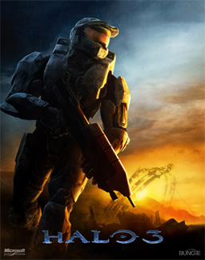
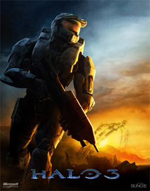

-
Halo 3
- 
- Developer: Bungie Inc.
- Release Year: 2007
- Wiki Entry: Link
- Dave's Thoughts: A game that strongly influenced my childhood. So many memories.
- 
-
Doom 3

- Developer: Id Software
- Release Year: 2004
- Wiki Entry: Link
- Dave's Thoughts: A formative experience in survival horror and a departure from the rest of the series. Extremely underrated.